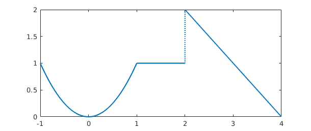
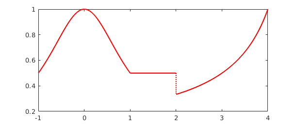
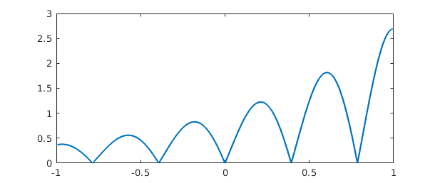
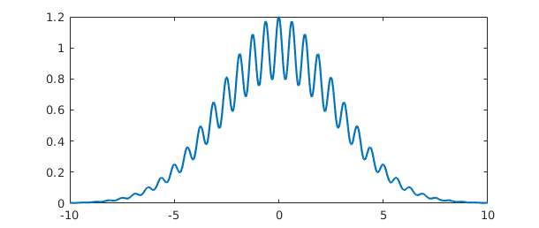

1.1 What is a chebfun?
A chebfun is a function of one variable defined on an interval $[a,b]$. The syntax for chebfuns is almost exactly the same as the usual MATLAB syntax for vectors, with the familiar MATLAB commands for vectors overloaded in natural ways. Thus, for example, whereas sum(f) returns the sum of the entries when f is a vector, it returns a definite integral when f is a chebfun.
Chebfun with a capital C is the name of the software system.
The aim of Chebfun is to "feel symbolic but run at the speed of numerics". More precisely our vision is to achieve for functions what floating-point arithmetic achieves for numbers: rapid computation in which each successive operation is carried out exactly apart from a rounding error that is very small in relative terms [Trefethen 2007].
The implementation of Chebfun is based on the mathematical fact that smooth functions can be represented very efficiently by polynomial interpolation in Chebyshev points, or equivalently, thanks to the Fast Fourier Transform, by expansions in Chebyshev polynomials. For a simple function, 20 or 30 points often suffice, but the process is stable and effective even for functions complicated enough to require 1000 or 1,000,000 points. Chebfun makes use of adaptive procedures that aim to find the right number of points automatically so as to represent each function to roughly machine precision, that is, about 15 digits of relative accuracy. (Originally Chebfun stored function values at Chebyshev points; in Version 5 it switched to storing Chebyshev expansion coefficients.)
The mathematical foundations of Chebfun are for the most part well established by results scattered throughout the 20th century. A key early figure, for example, was Bernstein in the 1910s. Much of the relevant material can be found collected in the Chebfun-based book Approximation Theory and Approximation Practice[Trefethen 2013].
Chebfun was originally created by Zachary Battles and Nick Trefethen at Oxford during 2002-2005 [Battles & Trefethen 2004]. Battles left the project in 2005, and soon four new members were added to the team: Ricardo Pachon (from 2006), Rodrigo Platte (from 2007), and Toby Driscoll and Nick Hale (from 2008). In 2009, Asgeir Birkisson and Mark Richardson also became involved, and other contributors included Pedro Gonnet, Joris Van Deun, and Georges Klein. Nick Hale served as Director of the project during 2010-2014. The Chebfun Version 5 rewrite was directed by Nick Hale during 2013-2014, and the team included Anthony Austin, Asgeir Birkisson, Toby Driscoll, Hrothgar, Mohsin Javed, Hadrien Montanelli, Alex Townsend, Nick Trefethen, Grady Wright, and Kuan Xu. Further information about Chebfun history is available at the Chebfun web site, http://www.chebfun.org.
This Guide is based on Chebfun Version 5, released in June 2014. Chebfun is available at http://www.chebfun.org.
1.2 Constructing simple chebfuns
The chebfun command constructs a chebfun from a specification such as a string or an anonymous function. If you don't specify an interval, then the default interval $[-1,1]$ is used. For example, the following command makes a chebfun corresponding to $\cos(20x)$ on $[-1,1]$ and plots it.
f = chebfun('cos(20*x)');
plot(f)

From this little experiment, you cannot see that f is represented by a polynomial. One way to see this is to find the length of f:
length(f)
ans =
61
Another is to remove the semicolon that suppresses output:
f
f =
chebfun column (1 smooth piece)
interval length endpoint values
[ -1, 1] 61 0.41 0.41
Epslevel = 2.183626e-15. Vscale = 1.000000e+00.
These results tell us that f is represented by a polynomial interpolant through 61 Chebyshev points, i.e., a polynomial of degree 60. These numbers have been determined by an adaptive process. We can see the data points by plotting fwith the '.-' option:
plot(f,'.-')

The formula for $N+1$ Chebyshev points in $[-1,1]$ is
$$ x(j) = -\cos(j \pi/N), \quad j = 0:N, $$
and in the figure we can see that the points are clustered accordingly near $1$ and $-1$. Note that in the middle of the grid, there are about 5 points per wavelength, which is evidently what it takes to represent this cosine to 15 digits of accuracy. For intervals other than $[-1,1]$, appropriate Chebyshev points are obtained by a linear scaling.
The curve between the data points is the polynomial interpolant, which is evaluated by the barycentric formula introduced by Salzer [Berrut & Trefethen 2004, Salzer 1972]. This method of evaluating polynomial interpolants is stable and efficient even if the degree is in the millions [Higham 2004].
What is the integral of $f$ from $-1$ to $1$? Here it is:
sum(f)
ans = 0.091294525072763
This number was computed by integrating the polynomial (Clenshaw-Curtis quadrature -- see Section 2.1), and it is interesting to compare it to the exact answer from calculus:
exact = sin(20)/10
exact = 0.091294525072763
Here is another example, now with the chebfun defined by an anonymous function instead of a string. In this case the interval is specified as $[0,100]$.
g = chebfun(@(t) besselj(0,t),[0,100]); plot(g), ylim([-.5 1])

The function looks complicated, but it is actually a polynomial of surprisingly small degree:
length(g)
ans =
89
Is it accurate? Well, here are three random points in $[0,100]$:
format long x = 100*rand(3,1)
x = 93.900156199988686 87.594281149298382 55.015634289842218
Let's compare the chebfun to the true Bessel function at these points:
exact = besselj(0,x); error = g(x) - exact; [g(x) exact error]
ans = 0.034806130830652 0.034806130830653 -0.000000000000000 0.034267558343628 0.034267558343627 0.000000000000000 -0.073316032636650 -0.073316032636650 0.000000000000000
If you want to know the first 5 zeros of the Bessel function, here they are:
r = roots(g); r = r(1:5)
r = 2.404825557695778 5.520078110286308 8.653727912911013 11.791534439014285 14.930917708487796
Notice that we have just done something nontrivial and potentially useful. How else would you find zeros of the Bessel function so readily? As always with numerical computation, we cannot expect the answers to be exactly correct, but they will usually be very close. In fact, these computed zeros are accurate to close to machine precision:
besselj(0,r)
ans = 1.0e-14 * -0.272609307918325 -0.082399534411417 0.010653221425832 0.071369727817872 -0.170901560623885
Most often we get a chebfun by operating on other chebfuns. For example, here is a sequence that uses plus, times, divide, and power operations on an initial chebfun x to produce a famous function of Runge:
x = chebfun('x');
f = 1./(1+25*x.^2);
length(f)
clf, plot(f)
ans = 181

1.3 Operations on chebfuns
There are more than 200 commands that can be applied to a chebfun. For a list of many of them you can type methods:
methods chebfun
Methods for class chebfun: abs cotd jaccoeffs range acos coth join rank acosd cov jump rdivide acosh csc kron real acot cscd ldivide reallog acotd csch le realpow acoth ctranspose legcoeffs realsqrt acsc cumprod legpoly rem acscd cumsum length remez acsch cylinder log repmat airy diff log10 residue all dirac log1p restrict and disp log2 roots angle display logical round any domain loglog sec arcLength ellipj lt secd area ellipke lu sech asec end mat2cell semilogx asecd epslevel max semilogy asech eq mean sign asin erf measure simplify asind erfc merge sin asinh erfcinv mesh sinc atan erfcx min sind atan2 erfinv minandmax sinh atan2d exp minus size atand expm1 mldivide sound atanh feval mod spy besselh fill movie sqrt besseli find mrdivide std besselj fix mtimes subsasgn besselk fliplr ne subspace bessely flipud newDomain subsref bvp4c floor nextpow2 sum bvp5c fourcoeffs norm surf cat fred normal surface ceil ge normest surfc cf get not svd cheb2cell gmres null tan cheb2quasi gt num2cell tand chebcoeffs heaviside or tanh chebellipseplot horzcat orth times chebfun hscale overlap transpose chebpade hypot pde15s uminus chebpoly imag permute unwrap chebtune innerProduct pinv uplus circconv integral plot vander comet inv plot3 var comet3 isdelta plotcoeffs vertcat complex isempty plus volt compose isequal poly vscale cond isfinite polyfit waterfall conj ishappy pow2 why conv isinf power xor cos isnan prod cosd isreal qr cosh issing quantumstates cot iszero quasi2cheb Static methods: constructor ode113 pchip interp1 ode15s spline lagrange ode45
To find out what a command does, you can use help.
help chebfun/sum
SUM Definite integral of a CHEBFUN.
SUM(F) is the integral of a column CHEBFUN F over its domain of definition.
SUM(F, A, B), where A and B are scalars, integrates a column CHEBFUN F over
[A, B], which must be a subdomain of F.domain:
B
/
SUM(F) = | F(t) dt.
/
A
SUM(F, A, B), where A and B are CHEBFUN objects, returns a CHEBFUN S which
satisfies
B(s)
/
S(s) = | F(t) dt.
/
A(s)
SUM(F, DIM), where DIM is one of 1, 2, sums F over the dimension DIM. If F
is a column CHEBFUN and DIM = 1 or if F is a row CHEBFUN and DIM = 2 then
this integrates in the continuous dimension of F, as described above.
Otherwise, SUM(F, DIM) sums across the columns (rows) of the column (row)
CHEBFUN F.
See also CUMSUM, DIFF.
Most of the commands in the list above exist in ordinary MATLAB; some exceptions are domain, restrict, chebpoly, and remez. We have already seen length and sum in action. In fact we have already seen subsref too, since that is the MATLAB command for (among other things) evaluating arguments in parentheses. Here is another example of its use:
f(0.5)
ans = 0.137931034482759
Here for comparison is the true result:
1/(1+25/4)
ans = 0.137931034482759
In this Runge function example, we have also implicitly seen times, plus, power, and rdivide, all of which have been overloaded from their usual MATLAB uses to apply to chebfuns.
In the next part of this tour we shall explore many of these commands systematically. First, however, we should see that chebfuns are not restricted to smooth functions.
1.4 Piecewise smooth chebfuns
Many functions of interest are not smooth but piecewise smooth. In this case a chebfun may consist of a concatenation of smooth pieces, each with its own polynomial representation. Each of the smooth pieces is called a "fun". This enhancement of Chebfun was developed initially by Ricardo Pachon during 2006-2007, then also by Rodrigo Platte starting in 2007 [Pachon, Platte and Trefethen 2010]. Essentially funs are the "classic chebfuns" for smooth functions on $[-1,1]$ originally implemented by Zachary Battles in Chebfun Version 1.
Later we shall describe the options in greater detail, but for the moment let us see some examples. One way to get a piecewise smooth function is directly from the constructor, taking advantage of its capability of automatic edge detection. For example, in the default "splitting off" mode a function with a jump in its derivative produces a warning message,
f = chebfun('abs(x-.3)');
Warning: Function not resolved using 65537 pts. Have you tried 'splitting on'?
The same function can be successfully captured with splitting on:
f = chebfun('abs(x-.3)','splitting','on');
The length command reveals that f is defined by four data points, two for each linear interval:
length(f)
ans =
4
We can see the structure of f in more detail by typing f without a semicolon:
f
f =
chebfun column (2 smooth pieces)
interval length endpoint values
[ -1, 0.3] 2 1.3 4.4e-16
[ 0.3, 1] 2 -1.1e-16 0.7
Epslevel = 1.110223e-15. Vscale = 1.300000e+00. Total length = 4.
This output confirms that f consists of two funs, each defined by two points and two corresponding function values. The functions live on intervals defined by breakpoints at $-1$, $1$, and a number very close to $0.3$. The Vscale field is related to the maximum absolute value of f and Epslevel gives some rough information about its relative accuracy.
Another way to make a piecewise smooth chebfun is to construct it explicitly from various pieces. For example, the following command specifies three functions $x^2$, $1$, and $4-x$, together with a vector of endpoints indicating that the first function applies on $[-1,1]$, the second on $[1,2]$, and the third on $[2,4]$:
f = chebfun({@(x) x.^2, 1, @(x) 4-x},[-1 1 2 4]);
plot(f)

We expect f to consist of three pieces of lengths 3, 1, and 2, and this is indeed the case:
f
f =
chebfun column (3 smooth pieces)
interval length endpoint values
[ -1, 1] 3 1 1
[ 1, 2] 1 1 1
[ 2, 4] 2 2 -1.1e-16
Epslevel = 1.110223e-15. Vscale = 2. Total length = 6.
Our eyes see pieces, but to Chebfun, f is just another function. For example, here is its integral.
sum(f)
ans = 3.666666666666667
Here is an algebraic transformation of f, which we plot in another color for variety.
plot(1./(1+f),'r')

Some Chebfun commands naturally introduce breakpoints in a chebfun. For example, the abs command first finds zeros of a function and introduces breakpoints there. Here is a chebfun consisting of 6 funs:
f = abs(exp(x).*sin(8*x)); plot(f)

And here is an example where breakpoints are introduced by the max command, leading to a chebfun with 13 pieces:
f = sin(20*x); g = exp(x-1); h = max(f,g); plot(h)

As always, h may look complicated to a human, but to Chebfun it is just a function. Here are its mean, standard deviation, minimum, and maximum:
mean(h)
ans = 0.578242020778010
std(h)
ans = 0.280937455806246
min(h)
ans = 0.135335283236613
max(h)
ans = 1.000000000000000
A final note about piecewise smooth chebfuns is that the automatic edge detection or "splitting" feature, when it is turned on, may subdivide functions even though they do not have clean point singularities, and this may be desirable or undesirable depending on the application. For example, considering $\sin(x)$ over $[0,1000]$ with splitting on, we end up with a chebfun with many pieces:
tic, f = chebfun('sin(x)',[0 1000*pi],'splitting','on'), toc
f =
chebfun column (32 smooth pieces)
interval length endpoint values
[ 0, 98] 87 2.7e-14 -0.71
[ 98, 2e+02] 88 -0.71 1
[ 2e+02, 2.9e+02] 88 1 -0.71
[ 2.9e+02, 3.9e+02] 87 -0.71 1.7e-13
[ 3.9e+02, 4.9e+02] 87 3.1e-13 0.71
[ 4.9e+02, 5.9e+02] 87 0.71 -1
[ 5.9e+02, 6.9e+02] 86 -1 0.71
[ 6.9e+02, 7.9e+02] 85 0.71 -7.6e-13
[ 7.9e+02, 8.8e+02] 86 -1.3e-12 -0.71
[ 8.8e+02, 9.8e+02] 86 -0.71 1
[ 9.8e+02, 1.1e+03] 86 1 -0.71
[ 1.1e+03, 1.2e+03] 86 -0.71 -3.2e-13
[ 1.2e+03, 1.3e+03] 85 -6.6e-13 0.71
[ 1.3e+03, 1.4e+03] 86 0.71 -1
[ 1.4e+03, 1.5e+03] 86 -1 0.71
[ 1.5e+03, 1.6e+03] 85 0.71 -1.6e-12
[ 1.6e+03, 1.7e+03] 86 -1.3e-12 -0.71
[ 1.7e+03, 1.8e+03] 86 -0.71 1
[ 1.8e+03, 1.9e+03] 86 1 -0.71
[ 1.9e+03, 2e+03] 85 -0.71 8.3e-13
[ 2e+03, 2.1e+03] 85 2.2e-12 0.71
[ 2.1e+03, 2.2e+03] 86 0.71 -1
[ 2.2e+03, 2.3e+03] 86 -1 0.71
[ 2.3e+03, 2.4e+03] 87 0.71 -1.7e-12
[ 2.4e+03, 2.5e+03] 85 1.5e-12 -0.71
[ 2.5e+03, 2.6e+03] 86 -0.71 1
[ 2.6e+03, 2.7e+03] 84 1 -0.71
[ 2.7e+03, 2.7e+03] 85 -0.71 -3.2e-12
[ 2.7e+03, 2.8e+03] 85 -2.5e-13 0.71
[ 2.8e+03, 2.9e+03] 84 0.71 -1
[ 2.9e+03, 3e+03] 86 -1 0.71
[ 3e+03, 3.1e+03] 85 0.71 -3.7e-12
Epslevel = 3.487391e-13. Vscale = 1.000000e+00. Total length = 2748.
Elapsed time is 1.509428 seconds.
In this case it is more efficient -- and more interesting mathematically -- to omit the splitting and construct one global chebfun:
tic, f2 = chebfun('sin(x)',[0 1000*pi]), toc
f2 =
chebfun column (1 smooth piece)
interval length endpoint values
[ 0, 3.1e+03] 1684 -2.1e-14 -3.1e-13
Epslevel = 3.487867e-13. Vscale = 9.999862e-01.
Elapsed time is 0.447233 seconds.
Splitting on and off are discussed further in Section 8.3.
1.5 Infinite intervals and infinite function values
A major change from Chebfun Version 2 to Version 3 was the generalization of chebfuns to allow certain functions on infinite intervals or which diverge to infinity; the initial credit for these innovations belongs to Nick Hale, Rodrigo Platte, and Mark Richardson. For example, here is a function on the whole real axis,
f = chebfun('exp(-x.^2/16).*(1+.2*cos(10*x))',[-inf,inf]);
plot(f)

and here is its integral:
sum(f)
Warning: Result may not be accurate as the function decays slowly at infinity. ans = 7.089815403621277
Here's the integral of a function on [1,inf]:
sum(chebfun('1./x.^4',[1 inf]))
ans = 0.333333333305146
Notice that several digits of accuracy have been lost here. Be careful! -- operations involving infinities in Chebfun are not always as accurate and robust as their finite counterparts.
Here is an example of a function that diverges to infinity, which we can capture with the 'exps' flag; see Chapter 7 for details:
h = chebfun('(1/pi)./sqrt(1-x.^2)','exps',[-.5 -.5]);
plot(h)

In this case the integral comes out just right:
sum(h)
ans = 1.000000000000000
For more on the treatment of infinities in Chebfun, see Chapter 9.
1.6 Periodic functions
Until 2014, Chebfun used only nonperiodic representations, based on Chebyshev polynomials. Beginning with Version 5, there is a new capability of representing sufficiently smooth periodic functions by trigonometric polynomials instead, that is, Fourier series. Such an object is still called a chebfun, but it is a periodic one. These features were added by Grady Wright in the first half of 2014, and will undoubtedly be developed further in the future.
For example, here is a periodic function on $[-\pi,\pi]$ represented in the usual way by a Chebyshev series.
ff = @(t) sin(t)/2 + cos(2*t) + 0.2*cos(100*t); f = chebfun(ff,[-pi,pi]); max(f) plot(f)
ans = 1.231249778347126

Its length, very roughly, is $100\times \pi$,
length(f)
ans = 383
Here is the same function represented by a Fourier series:
f2 = chebfun(ff,[-pi,pi],'periodic') max(f2) plot(f2,'m')
f2 =
chebfun column (1 smooth piece)
interval length endpoint values periodic
[ -3.1, 3.1] 201 1.2 1.2
Epslevel = 3.739287e-15. Vscale = 1.640723e+00.
ans =
1.231249778347128

Its length is now only about $100\times 2$ (exactly 201). This improvement by a factor of about $\pi/2$ is typical.
length(f2)
ans = 201
We can confirm that the two functions agree like this:
norm(f-chebfun(f2,[-pi, pi]))
ans =
1.303148667359825e-14
Readers may be interested to compare plotcoeffs applied to the first and second versions of $f$. Rather than display that here we shall turn to a simpler example involving a shorter Fourier series. Consider the function
f = chebfun('7 + sin(t) + exp(1)*cos(2*t)',[-pi,pi],'periodic')
f =
chebfun column (1 smooth piece)
interval length endpoint values periodic
[ -3.1, 3.1] 5 9.7 9.7
Epslevel = 4.618714e-16. Vscale = 9.718282e+00.
Here are the coefficients of $f$ as an expansion in sines and cosines:
[a,b] = fourcoeffs(f)
a =
2.718281828459045 0.000000000000001 7.000000000000000
b =
0 1.000000000000000
Here they are as an expansion in complex exponentials:
c = fourcoeffs(f)
c = Column 1 1.359140914229522 + 0.000000000000000i Column 2 0.000000000000000 - 0.500000000000000i Column 3 7.000000000000000 + 0.000000000000000i Column 4 0.000000000000000 + 0.500000000000000i Column 5 1.359140914229522 + 0.000000000000000i
Bookkeeping of Fourier coefficients can often be a headache. If these examples don't make the patterns clear, details can be found with help fourcoeffs.
For a mathematically less trivial example, here is the cosine expansion of a function whose Fourier series coefficients are known to be values of a Bessel function:
f = chebfun('exp(cos(t))',[-pi pi],'periodic');
[a,b] = fourcoeffs(f);
n = floor(length(f)/2);
exact = 2*besseli(n:-1:0,1); exact(end) = exact(end)/2;
disp(' computed exact')
disp([a' exact'])
computed exact 0.000000000000040 0.000000000000040 0.000000000001039 0.000000000001039 0.000000000024980 0.000000000024980 0.000000000550590 0.000000000550590 0.000000011036772 0.000000011036772 0.000000199212481 0.000000199212481 0.000003198436462 0.000003198436462 0.000044977322954 0.000044977322954 0.000542926311914 0.000542926311914 0.005474240442094 0.005474240442094 0.044336849848664 0.044336849848664 0.271495339534077 0.271495339534077 1.130318207984970 1.130318207984970 1.266065877752008 1.266065877752008
1.7 Rows, columns, and quasimatrices
MATLAB doesn't only deal with column vectors: there are also row vectors and matrices. The same is true of Chebfun. The chebfuns shown so far have all been in column orientation, which is the default, but one can also take the transpose, compute inner products, and so on:
x = chebfun(@(x) x)
x =
chebfun column (1 smooth piece)
interval length endpoint values
[ -1, 1] 2 -1 1
Epslevel = 1.110223e-15. Vscale = 1.
x'
ans =
chebfun row (1 smooth piece)
interval length endpoint values
[ -1, 1] 2 -1 1
Epslevel = 1.110223e-15. Vscale = 1.
x'*x
ans = 0.666666666666667
One can also make matrices whose columns are chebfuns or whose rows are chebfuns, like this:
A = [1 x x.^2]
A =
chebfun column1 (1 smooth piece)
interval length endpoint values
[ -1, 1] 3 1 1
Epslevel = 2.220446e-15. Vscale = 1.
chebfun column2 (1 smooth piece)
interval length endpoint values
[ -1, 1] 3 -1 1
Epslevel = 1.110223e-15. Vscale = 1.
chebfun column3 (1 smooth piece)
interval length endpoint values
[ -1, 1] 3 1 1
Epslevel = 2.220446e-15. Vscale = 1.
A'*A
ans = 2.000000000000000 -0.000000000000000 0.666666666666667 -0.000000000000000 0.666666666666667 0 0.666666666666667 0 0.400000000000000
These are called quasimatrices, and they are discussed in Chapter 6.
1.8 Chebfun features not in this Guide
Some of Chebfun's most remarkable features haven't made it into this edition of the Guide. Here are some of our favorites:
o leg2cheb and cheb2leg for fast Legendre-Chebyshev conversions,
o conv and circconv for convolution,
o The 'equi' flag to the Chebfun constructor for equispaced data,
o polyfit for least-squares fitting in the continuous context,
o inv for computing the inverse of a chebfun,
o pde15s for PDEs in one space and one time variable.
To learn about any of these options, try the appropriate help command. Just as a taster, here's a hint of how fast Chebfun can convert a ten-thousand coefficient Chebyshev expansion to Legendre coefficients and back again using an algorithm from [Hale & Townsend 2013]:
tic ccheb = randn(10000,1); cleg = cheb2leg(ccheb); ccheb2 = leg2cheb(cleg); norm(ccheb-ccheb2,inf) toc
ans =
4.076383675055695e-11
Elapsed time is 1.212305 seconds.
1.9 How this Guide is produced
This guide is produced in MATLAB using the publish command with a style sheet somewhat different from the usual; the output of publish is then processed by Markdown. To publish a chapter for yourself, make sure the chebfun guide directory is in your path and then type, for example, open(publish('guide1')). The formatting may not be exactly right but it should certainly be intelligible.
1.10 References
[Battles & Trefethen 2004] Z. Battles and L. N. Trefethen, "An extension of MATLAB to continuous functions and operators", SIAM Journal on Scientific Computing, 25 (2004), 1743-1770.
[Berrut & Trefethen 2005] J.-P. Berrut and L. N. Trefethen, "Barycentric Lagrange interpolation", SIAM Review 46, (2004), 501-517.
[Hale & Townsend 2013] N. Hale and A. Townsend, A fast, simple, and stable Chebyshev--Legendre transform using an asymptotic formula, SIAM Journal on Scientific Computing, 36 (2014), A148-A167.
[Higham 2004] N. J. Higham, "The numerical stability of barycentric Lagrange interpolation", IMA Journal of Numerical Analysis, 24 (2004), 547-556.
[Pachon, Platte & Trefethen 2010] R. Pachon, R. B. Platte and L. N. Trefethen, "Piecewise-smooth chebfuns", IMA J. Numer. Anal., 30 (2010), 898-916.
[Salzer 1972] H. E. Salzer, "Lagrangian interpolation at the Chebyshev points cos(nu pi/n), nu = 0(1)n; some unnoted advantages", Computer Journal 15 (1972), 156-159.
[Trefethen 2007] L. N. Trefethen, "Computing numerically with functions instead of numbers", Mathematics in Computer Science 1 (2007), 9-19.
[Trefethen 2013] L. N. Trefethen, Approximation Theory and Approximation Practice, SIAM, 2013.